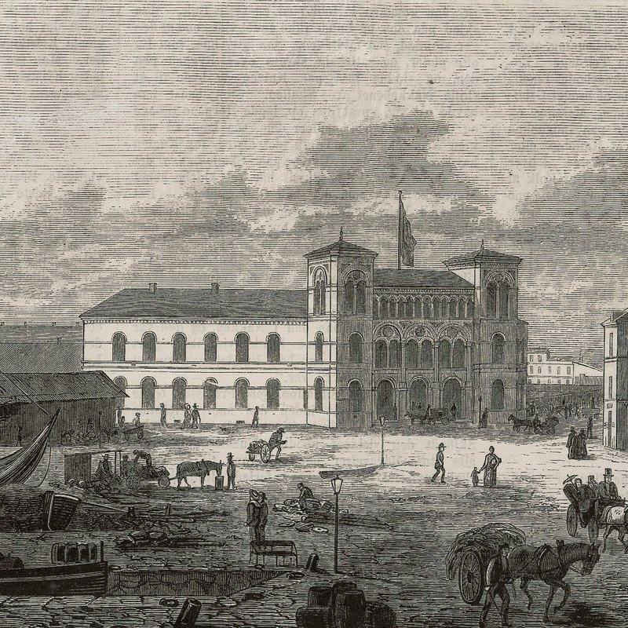
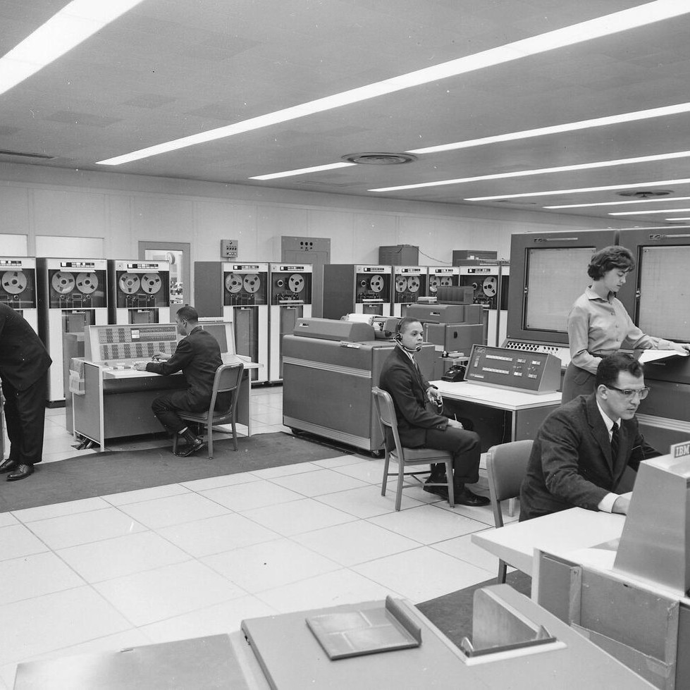

Insight and discretion
VAERD advises decision-makers on high-value questions impacting their business and life. Our clients value our human approach and rely on our independent thinking and facilitation on their most complex questions.


200 years of impact
Our name is inspired by Hans Nielsen Hauge and his book Om religiøse Følelser og deres Værd, published in 1817. Between 1797 and 1804, Hauge walked much of Norway. Interested in people, he made many friends. Those friendships became a network, and the network became an economy. On his advice, friends bought and created businesses that turned into enterprises. His work is viewed as Norway's first nationwide popular movement, built at a time when all popular organisation was banned. He saw the value in independent thinking and lasting relationships. This created enterprises still existing today. Værd/vaerd means worth.
What we advise on
We find that capabilities and sectors blend, and we believe in merging areas of expertise, since they so often meet where commercial value or impact is created.
- On-call Executive Advisory
- M&A
- Policy & Change
- Shareholder Perspective
- Market Entry & Expansion
- Strategic Relationship Advisory
- Research on Demand
- Technology & AI
- Investors & Family Offices
- Philanthropy & Social Impact
- Public Sector